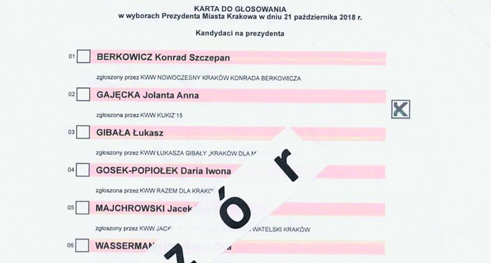

Test kompetencji
dla naszych reprezentantów
Polacy zasługują na dobrych przywódców. Szczególnie w dzisiejszych, coraz trudniejszych czasach. Z wojną za sąsiednią granicą, z wyzwaniami jak Zielony Ład czy Transformacja Energetyczna. Musimy się upewnić, że od prawa do lewa sceny politycznej, w sejmikach i samorządach, wszędzie mamy wyłącznie ludzi kompetentnych. Postawmy na najlepszych liderów, ponad podziałami, dla naszego wspólnego dobra.

W dzisiejszych czasach demokracja uznawana jest za najlepszy sposób doboru liderów zarządzających krajem, miastem czy gminą. Mimo to, demokracja nie jest systemem doskonałym. Jednym z poważniejszych problemów jest możliwość, w której osoby nieposiadające odpowiednich kwalifikacji mogą dostać się do władzy i podejmować decyzje wpływające na życie milionów z nas. Aby ograniczyć ten problem, proponuję wprowadzenie prostego, ale skutecznego rozwiązania – obowiązkowego testu kompetencji dla osób chcących pełnić funkcje publiczne, takie jak stanowisko Posła, Prezydenta, Burmistrza czy Wójta.
Dlaczego potrzebny jest test?
Chciałbym, by każdy wyborca mógł łatwiej zrozumieć, czy kandydat ubiegający się o ważne stanowisko jest wstanie podołać wyzwaniom, które ono niesie. Test kompetencji miałby sprawdzić wiedzę ogólną, rozsądek, zdolność myślenia i umiejętności wszystkich zarejestrowanych kandydatów, dzięki czemu każdy z nas mógłby łatwiej zdecydować, kto będzie najlepszym liderem.
Co obecnie nie działa?
Dzisiaj trudno jest poznać rzeczywiste umiejętności osób kandydujących na ważne stanowiska. Nie mając rzetelnych i obiektywnych informacji często głosujemy na kogoś, kto ciekawie wygląda, dużo obiecuje, lub jest wszędzie na plakatach, bo jego partia wydała dużo pieniędzy na reklamy. A to nie zawsze oznacza, że jest to dobry kandydat do zarządzania nami i krajem.
Konsekwencje Wyboru Niekompetentnego Kandydata
Wybór osób nieposiadających odpowiednich umiejętności do zarządzania lub tworzenia prawa może mieć poważne konsekwencje. Złe decyzje samorządowe, błędne ustawy w kraju lub nieprawidłowo prowadzone negocjacje za granicą, oznaczają niepotrzebne, duże obciążenia finansowe dla rodzin, utratę miejsc pracy, a nawet ograniczenia naszych praw obywatelskich. Polepszając proces wyborczy i dbając o to, aby na czele naszych społeczności stawali ludzie kompetentni, budujemy silniejsze, bardziej zjednoczone i prosperujące społeczeństwo.
Każdy wciąż ma szansę
Test nie będzie wymagał zdobycia określonej liczby punktów, aby móc startować w wyborach. To znaczy, że nawet osoby, które zdobyły mało punktów lub wcale, nadal mogą startować i wygrywać wybory. Nie chcemy nikomu zabraniać kandydowania, tylko rzetelnie pokazać wyborcom, jakie są umiejętności kandydatów bez względu na przynależność partyjną czy poglądy.
Jak będzie wyglądał test?
Zasady testu są ogólnodostępne i zrozumiałe dla wszystkich. Na potrzeby testu przygotowana jest pula kilku tysięcy krótkich pytań zamkniętych, to znaczy takich, na które można odpowiedzieć wybierając gotowe odpowiedzi A, B, C lub D. Każdy obywatel może zaproponować pytanie. Przedstawiciele każdej partii w parlamencie tworzą komisję zatwierdzającą pytania. Kandydaci mają możliwość zapoznania się ze wszystkimi pytaniami przed testem, aby się jak najlepiej przygotować. Każdy zarejestrowany kandydat obowiązkowo przystępuje do testu, który odbywa się w trakcie kampanii wyborczej. Z puli wszystkich pytań system losuje sto pytań na potrzeby testu.
Przykładowy test - spróbuj swoich sił
Treść pytania
W jaki sposób test pomoże mi w głosowaniu
Wyniki testu będą ogólnodostępne na stronie internetowej PKW oraz przy każdym nazwisku kandydata na karcie wyborczej. Od wyborcy będzie zależeć czy weźmie wynik kandydata pod uwagę czy nie. Jednak dzięki temu, że bez najmniejszego wysiłku poznamy kompetencje każdego kandydata na liście, będziemy mogli głosować bardziej świadomie niż jest to możliwe dzisiaj. Co z tego mamy?
Taki test da wszystkim jasny obraz, kto jest dobrze przygotowany do prowadzenia naszej społeczności. Test sprawi, że wybory będą również opierać się na kompetencjach kandydatów, a nie jedynie na ich wyglądzie czy obietnicach. Obowiązkowy test kompetencji może również zachęcić kandydatów do tego, by się lepiej przygotowywali i doskonalili do przyszłych stanowisk, co jest ważne dla wszystkich i zwiększy naszą szansę na dobrobyt.
Podsumowanie
Pomysł na test kompetencji to krok w stronę lepszej demokracji, gdzie każdy głos jest oddany świadomie. To sposób na to, by nasza wspólna przyszłość była w rękach osób, które są najlepiej przygotowane do jej kształtowania. W efekcie zwiększamy szansę dla nas wszystkich na lepszą przyszłość, bez przykrych konsekwencji błędów niekompetentnych liderów.